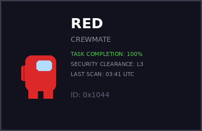
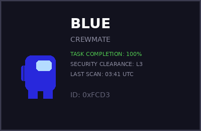
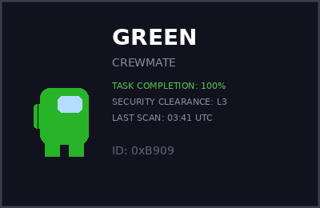
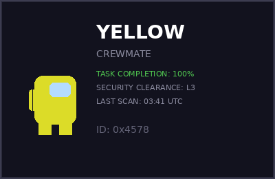

EMERGENCY MEETING
§ 1 · MEETING TRANSCRIPT
Recovered in full from the black box. Forensic analysis detected anomalous zero-width Unicode characters interspersed in certain messages. The characters render as invisible but carry data at the byte level. Distribution is non-uniform — they cluster in messages from one specific crewmate.
Forensic note: The zero-width characters use U+200B (zero-width space) and U+200C (zero-width non-joiner). Each represents a binary digit. They appear only in messages from one crewmate. Extract and decode them as 8-bit ASCII bytes.
§ 2 · RECOVERED ID CARDS
Four crewmate ID cards were reconstructed from the security buffer. Standard steganographic analysis detected embedded data in the alpha channel of each card image. WARNING: The forensic team flagged this data as potentially planted by accessor 0x7E as a counter-forensic measure. Treat image-derived data as hostile until independently verified.




§ 3 · COMMS AUDIO
Four audio clips recovered from the internal comms system. Three are routine traffic. One was transmitted on a non-standard sideband frequency. The forensic team noted that two clips have structural anomalies — one contains tonal patterns in the audible range, and one has a file size inconsistent with its audio duration, suggesting data appended beyond the WAV boundary.
Two clips are marked anomalous. COMMS-03 contains audible tonal patterns on sideband ch-9. COMMS-04 has a filesize mismatch — the WAV header reports fewer audio bytes than the file actually contains. The forensic team did not investigate further before reassignment.
§ 4 · DECODE TERMINAL
The ship's decode terminal was damaged in the partial format. Direct interface is offline. The verification endpoint remains operational and accepts manual transmissions via POST request.
§ 5 · SHIP DIAGNOSTICS
Automated verification module recovered from the ship's diagnostic partition. [integrity: unverified · origin: accessor 0x7E]